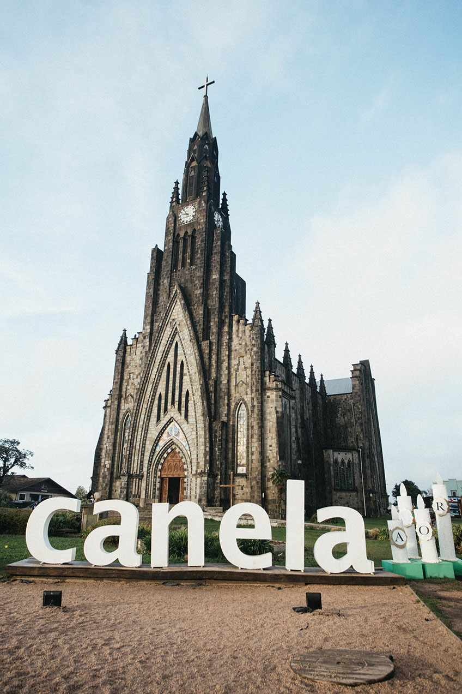

Em Agosto de 2022, iremos aproveitar o friozinho do inverno de uma das cidades mais lindas do Brasil: Gramado, no Rio Grande do Sul.
A cidade é mais rica em atividades turísticas, cenários belíssimos e possui uma culinária muito diversificada, com influência europeia dos italianos e alemães.
Gramado é um dos destinos nacionais mais procurados, pois além de toda sua diversidade, o destino fica pertinho de Canela, outra linda cidade perfeita para um bate-volta. No inverno, Gramado atinge temperaturas entre 8°C e 14°C, ou seja, o destino perfeito para uma mini-férias no Brasil.
Saiba o que está incluso em nossos pacotes:No pacote personalizado da D’tur, iremos proporcionar alguns passeios essenciais para que você tenha a melhor e mais completa experiência durante a sua estadia em Gramado. Você poderá contar ainda com uma assessoria exclusiva antes e durante a viagem e ganhará de presente um roteiro personalizado com dicas de passeios, pontos turísticos, restaurantes, transporte e descontos, para você aproveitar ao máximo seu tempo livre em Gramado.
Com um guia local, passaremos pelos principais pontos turísticos e lojas de chocolates e souvenires das duas cidades. E em canela, você terá a oportunidade de conhecer a famosa Catdral que está entre as Sete Maravilhas do Brasil.
Nesse passeio de um dia, teremos muita diversão, começando com um delicioso passeio à bordo da Maria Fumaça, ao som de muita música tradicional e degustação de deliciosos vinhos ou sucos de uvas. Agregando ao passeio, conheceremos uma vinícola e uma queijaria tradicionais da cidade e terminaremos o dia com um lindo musical sobre os imigrantes italianos que chegaram ao Brasil. Nesse passeio, está incluso um almoço regional.

Você apreciará o tradicional churrasco gaúcho + Costelão 12h + buffet livre, além de um show de dança com um dos melhores grupos folclóricos do estado.
Toda essas experiência por apenas R$ 2.900,00 por pessoa.
Parcelamento no boleto ou Pix
Entrada de R$224,00 + 12 x 223,00